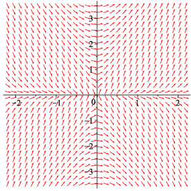

Consider the direction field below.

Which of the following differential equations is represented by this direction field?
| A. | B. | C. | D. |
- Solution:
- We can rule out functions based on the sign of the slope in each quadrant. Since the slopes are negative in the second quadrant, the functions in A and C are ruled out. Positive slopes in the third quadrant rule out the function in B. This leaves the function in D, and inspection of the slopes shows that they agree with this function.